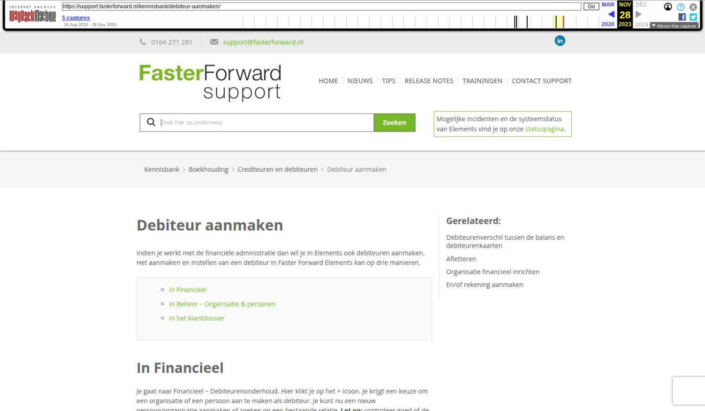

Debiteur aanmaken

Tekstinhoud
Debiteur aanmaken
Indien je werkt met de financiële administratie dan wil je in Elements ook debiteuren aanmaken. Het aanmaken en instellen van een debiteur in Faster Forward Elements kan op drie manieren.
In Financieel
In Beheer – Organisatie & personen
In het klantdossier
In Financieel
Je gaat naar Financieel – Debiteurenonderhoud. Hier klikt je op het + icoon. Je krijgt een keuze om een organisatie of een persoon aan te maken als debiteur. Je kunt nu een nieuw persoon/organisatie aanmaken of zoeken op een bestaande relatie. Let op: controleer goed of de debiteur/klant/organisatie al bestaat. Is deze al aanwezig en je maakt toch een nieuwe persoon/organisatie aan dan krijgt deze zijn eigen relatienummer en wordt dus een nieuwe debiteur.
Vervolgens krijg je een overzicht waarin je een relatie op kunt voeren met NAW gegevens. Daarnaast geef je aan welke subadministraties er geselecteerd moeten worden voor deze relatie onder het tabblad detail. Je vinkt daar onder categorie leverancier/klant aan. Je vinkt bijvoorbeeld "debiteur" aan als het gaat om een debiteur. Zodra je de subadministratie aanklikt, krijg je aan de rechterkant opties erbij. Hierin kan je de geselecteerde subadministratie verder specificeren.
Als je de specificaties hebt gevuld, kan je de relatie opslaan door middel van het groene vinkje links bovenaan. Er wordt een relatienummer ofwel debiteurennummer aangemaakt.
Let op! Daarnaast moet na het invullen van het rekeningnummer de mandaat op geaccepteerd staan.
In Beheer – Organisatie & personen
Middels Beheer – Organisatie & personen kan je organisaties en/of personen aanmaken. Hiervoor moet je wel de juiste rechten hebben. Voordat je een nieuwe organisatie of persoon aanmaakt, zoek je deze eerst op om te kijken of deze al bestaat. Let op: doe je dit niet en je maakt een nieuwe persoon/organisatie aan terwijl deze al bestaan, dan komt de persoon/organisatie dubbel in Elements te staan. Ook krijgt deze een eigen relatienummer/debiteurennummer.
Bestaat de persoon/organisatie niet dan klik je op het + icoon. Hier vul je de gegevens in en sla je op. Vervolgens kan je bij een organisatie in het tabblad 'detail' de subadministratie aanvinken. Sla je dit op dan komt het tabblad 'financieel' tevoorschijn die je verder kan invullen.
Bij een persoon kan je de subadministratie vullen onder het tabblad 'relatietype'. Ook dan komt het tabblad 'financieel' zichtbaar.
In het klantdossier
In het klantdossier is het mogelijk om de administratierelaties uit het betreffende dossier in te zien of aan te maken. Het overzicht vind je in het dossier onder het tabblad Financieel – Relatie.
Aanmaken in het dossier gaat als volgt:
Je gaat naar het tabblad Partijen en objecten, klik op de persoon of organisatie die als debiteur ingericht wordt. Je komt dan in het tabblad 'Detail', daar vink je debiteur aan en slaat deze pagina op.
Er komt nu een tabblad 'Financieel' bij. Om de communicatie over een bepaalde debiteur of crediteur eenvoudiger te maken wordt er een administratie relatienummer (debiteurennummer) aangemaakt door het systeem. Het nummer is zichtbaar onder het tabblad 'Financieel' en is ook beschikbaar als tag zodat het nummer in de correspondentie gebruikt kan worden.
Vervolgens kan je de subadministratie verder specificeren en invullen met rekeningnummer. Na opslaan kan de mandaat gegenereerd worden voor incasso's.
Let op: indien je een factuur aanmaakt onder een dossier en de subadministratie is nog niet gevuld voor de klant dan wordt deze automatisch gevuld, nadat de factuur is aangemaakt.
Laatste update: 5 juni 2023
Was deze informatie nuttig?
Ja Nee